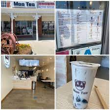
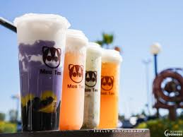
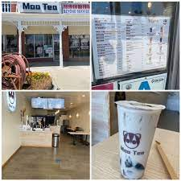
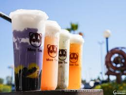

Brandon Wang
Hello, I'm Brandon Wang, and I'm excited to share a little about myself and my journey so far. I'm a business administration major with a passion for customer service and a knack for problem-solving. Currently, I'm working as a teller at a local bank, where I've been able to apply the skills I've honed through my previous roles as a waiter at Boiling Point and a barista at a boba shop.
My journey into the world of business administration began during my college years, where I discovered my passion for understanding how organizations work and how they interact with customers and the community. This curiosity led me to pursue a degree in business administration, and I've been fortunate to apply my academic knowledge in my professional life.
For the past couple of years, I've been working as a teller at a well-respected bank. This role has been instrumental in enhancing my understanding of the financial industry and has allowed me to develop strong communication and problem-solving skills. As a teller, I've had the opportunity to assist customers with their banking needs, from deposits and withdrawals to providing information on various financial products. I take pride in offering exceptional service to customers and ensuring that their banking experience is smooth and efficient. It's been a rewarding experience to be a part of a team that helps people manage their finances and achieve their financial goals.
Prior to my current role as a bank teller, I gained valuable experience in customer service in the hospitality and food service industry. I worked as a waiter at Boiling Point, a popular restaurant, and as a barista at a local boba shop. These positions taught me the importance of patience, attention to detail, and the ability to work under pressure. I learned how to handle diverse customer requests and provide excellent service, even during busy shifts. These experiences taught me the value of teamwork, adaptability, and maintaining a positive attitude in challenging situations.
My time as a barista was especially memorable. Crafting the perfect cup of boba tea required precision and creativity. I enjoyed engaging with customers, suggesting different flavors, and customizing their drinks to suit their preferences. It was gratifying to see the smiles on their faces as they sipped their favorite boba concoctions. This role instilled in me the importance of consistency and the art of perfecting a craft, whether it's creating a latte or mastering latte art.
I've always been passionate about learning and growing in my professional life. My experiences as a bank teller, waiter, and barista have equipped me with a diverse set of skills that I continue to refine. As a business administration major, I'm eager to explore new opportunities and challenges within the business world. Whether it's through financial services, entrepreneurship, or management, I'm excited to apply my skills and knowledge to make a positive impact.
In the future, I aspire to continue my education and possibly pursue a more specialized role within the financial industry, such as financial advising or management. I believe that every experience, from serving boba to handling banking transactions, has contributed to my growth and understanding of the business world. As I continue my journey, I look forward to embracing new challenges, expanding my skill set, and making a meaningful contribution in my chosen field.
Thank you for taking the time to get to know me a bit better. I'm excited about the path ahead, and I'm dedicated to building a successful and fulfilling career in business administration.
Experience
Education
University of California Riverside
Portfolio



 